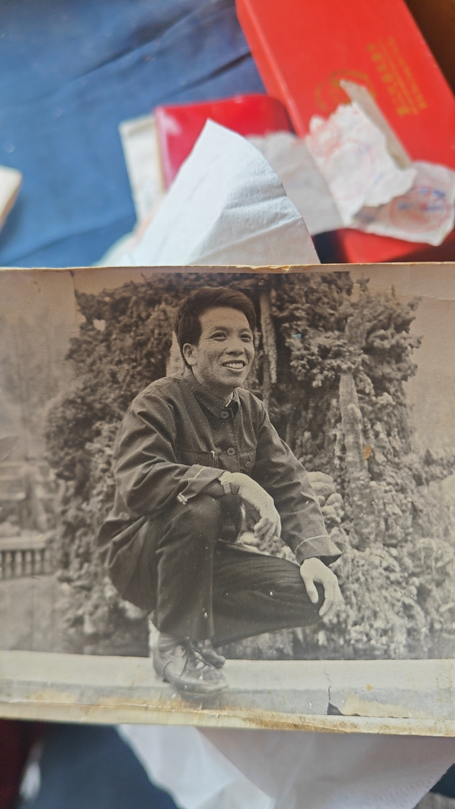

春节回湖北, 家人们和三峡大学的退休教职工们总是提起外公宋继禄, 回想起过去的点滴, 为其逝世后连一份像样的悼文也没有而惋惜. 本文内容来源于对宋医生遗物的整理和家人们的回忆.
{kind=link}
《工作笔记》摘录
本节来源于宋继禄的《工作笔记》, 一些文字因年代久远导致无从考证, 这些字以”*”代替.
经历简历
- 1947年8月13日出生
- 1956年-1964年 在积玉学校读书 (证明人)杨幼*
- 1964年-1965年10月 在当地农林劳动
- 1965年10月 参加中国人民解放军
- 1965年11月-1968年3月 在人民解放军(北京军区邢台[1])4593部队医院卫校学员 (证明人)*家芳
- 1968年-1970年3月 在本医院工作
- 1970年4月 转业后调省水利厅温峡口水坝建设工作
- 1970年7月7日-1971年 转调宜昌三三〇开挖分局卫生部医生 (证明人)陈振华
- 1971年-1972年 在开挖卫生部工作
- 1972年4月4日-1975年 由开挖调入基建卫生部工作 (证明人)张正球
- 1975年8月-1979年 由基建分局卫生部调入工人医务室 (证明人)孟昭客 原工人书记
- 1977年10月 由二级工升为三级工 工资47.00元
- 1979年7月25号 在宜昌地区人民医院进修学习
- 1980年7月29号 在宜昌地区医院顺利结束一年学习时间. 学习完毕后个人总结.
- 在学习期间遵守院级科室的规章制度.
- 掌握了内科常见病、多发病的诊断与治疗.
- 对内科危重病人的抢救和处理有了新的认识概念和基础.
- 熟练的掌握内科普通技术操作.
- 结合病人学理论.
- 不懂地方找老师告诉.
这是在宜昌地区人民医院学习的感悟.
- 1981年7月11日 由潜江迁入宜昌市.
- 1983年3月-12月12日 在三三〇工区组织中级卫生人员基础理论学习, 时间9个月. 十二项科目成绩如下:
- 化学 66.9
- 生物化学 86.5
- 拉丁文 82.5
- 生物学 84
- 生理学 73
- 病理学 95
- 微生物及寄生虫学 86.4
- 诊断学 71.5
- 药理学 95
- 内科学 66
- 外科学 82.7
- 解剖学 67
(这些成绩位于某份”结业表”中, 原件遗失)在1984年2月21日上午把此表交给徐部长.
- 2015年5月19日因胃癌逝世
奋斗一生的各种技术专业证
- 武汉水利电力大学工作证
- 三峡大学工作证
- 80年获全省统考医生证书
- 1993年获湖北医师专业资格证书
- 96年获主治医生证书
- 1999年(原文199年, 应为笔误)5月1日获中华人民共和国医师资格证书
- 麻醉医师资格证书
- 宜昌市卫生局经审查批准, 同意你在**使用麻醉药品、第一类精神药品处方, 有效期2000年2月17日至2004年12月31日
申请调房报告
兹有总务处校医院职工宋继禄, 因家住人口较多. 长女宋妮娜, 次女儿宋述燕在市内高中上学. 儿子宋述波中学生. 现年龄14岁. 妻. 陈联芳. 全家共有伍口人, 现住水院9号楼二室一厅. 因小孩多. 都已长大成人. 实在是难以住下. 特申请将二室一厅调换为三室一厅住房. 敬请院领导和房管部门领导人予以解决为盼.
此致
敬礼!
调房申请人 宋继禄
91.11.14
情况属实, 请予致电解决. 三峡大学校医院(公章)
91.11.14
参考文献
[1] 邓**. 石闸门社区干部失职造成退役老军人住房遭损要求赔偿[EB/OL]. link, 2020-07-01, 2024-02-15